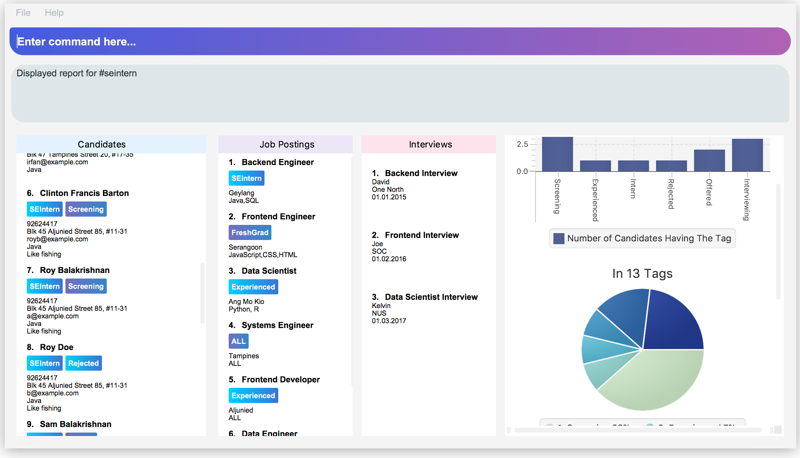

By: Team JACKHA (CS2103JAN2018-W11-B3) Since: Jun 2016 Licence: MIT
- 1. Introduction
- 2. About
- 3. Quick Start
- 4. Command Line
- 5. Features
- 6. FAQ
- 7. Command Summary
- Appendix A: Glossary
1. Introduction
Infinity Book is a desktop application that provides Tech recruiters end-to-end support, from searching for candidates,to adding job postings and saving their resumes and interviews.
More importantly, IB is optimized for those who prefer to work with a desktop Command Line Interface (CLI) while still having the benefits of a Graphical User Interface (GUI). If you can type fast, IB can get your candidates management tasks done faster than traditional GUI apps.
Jump to the Section 3, “Quick Start” to get started. Enjoy!
2. About
This User Guide introduces a user to Infinity Book, provides set up instructions and details the features of the product. This document does not assume any prior technical knowledge, and the glossary explains any technical terms. Please check the FAQ section for frequent user issues.
To quickly set up Infinity Book and try out the features, jump to Section 3, “Quick Start”.
| For information about implementation and architecture, please refer to the Developer Guide. |
3. Quick Start
If you are a first time user, this section will help you get started with Infinity Book in 5 easy steps:
-
Ensure you have Java version
1.8.0_60or later installed in your Computer. If you do not have Java installed, get it here.Having any Java 8 version is not enough.
This app will not work with earlier versions of Java 8.
Refer to Section 6, “FAQ” for instructions to check Java version. -
Download the latest
infinitybook.jarhere. -
Copy the file to the folder you want to use as the home folder for your Infinity Book.
-
Double-click the file to start the app. The GUI should appear in a few seconds.
Figure 1. The User Interface.
Set up is now complete. You have launched Infinity Book. You should see the interface as shown in Figure 1.
Type your command in the command box and press Enter to execute it. Some examples are given below.
Typing help and pressing Enter will open the help window.
Other basic example commands are shown here:
-
list: lists all contacts -
addn/John Doe p/98765432 e/johnd@example.com a/John street, block 123, #01-01: adds a contact namedJohn Doeto the Infinity Book. -
delete3: deletes the 3rd contact shown in the current list -
exit: exits the app
You can view the entire command list here.
|
The User Interface might appear mildly different for different versions of the product. |
Refer to Section 5, “Features” for details of each command and for more commands.
4. Command Line
Infinity Book uses a command line interface that follows the command format given below. Auto-complete and auto-correct are optimised to assist in CLI usage as detailed in this section.
4.1. Command Format
-
Command starts with a
COMMAND WORDto specify the command you want to perform. -
Words prefixed with a dash (optional) are
COMMAND OPTIONe.g. inedit -add-tag t/TAG,-add-tagis a command option. -
Words in
UPPER_CASEare the parameters to be supplied by the user e.g. inadd n/NAME,NAMEis a parameter which can be used asadd n/John Doe. -
Items in square brackets are optional e.g
n/NAME [t/TAG]can be used asn/John Doe t/friendor asn/John Doe. -
Items with
… after them can be used multiple times including zero times e.g.[t/TAG]…can be used ast/friend,t/friend t/familyetc. -
Parameters can be in any order e.g. if the command specifies
n/NAME p/PHONE_NUMBER,p/PHONE_NUMBER n/NAMEis also acceptable.
4.2. Auto-complete and auto-correct
To enhance your experience with the Command Line Interface(CLI), Infinity Book comes with built in auto-correct and auto-complete. This section explains how you can use these features to speed up your CLI experience.
4.2.1. Auto-complete
Auto completes command words being typed into Infinity Book.
To auto-complete a command word:
-
Type in atleast the first character of your command word.
-
Press TAB until your desired command word appears in the command box.
|
Entered text must match (case sensitive) the start of the desired command. If no matches are available, no change is made to the input text. |
Example:
-
li+ TAB : Completes command word tolist. -
LI+ TAB : Reports no completions found.
|
Use TAB repeatedly to loop through the list as many times as you need. |
4.2.2. Auto-correct
Auto correct spell checks command words being typed into Infinity Book.
To auto-correct a command word:
|
Entered text must be within one edit-distance of the desired command, by removal, addition or swapping of adjacent characters If no corrections are available, no change is made to the input text. |
-
Type in a possibly incorrect version of the command word.
-
Press SPACE and watch the command word auto-corrected immediately.
|
If a copy-pasted command may contain a spelling error in the command word, press SPACE to correct the command word without affecting the arguments entered. |
Example:
-
lsit+ SPACE : Corrects command word tolist. -
lit+ SPACE : Corrects command word tolist. -
liist+ SPACE : Corrects command word tolist. -
lllist+ SPACE : Does not make any correction.
|
While copy pasting commands with spelling errors, the SPACE key will not be available for use to insert spaces in the command while editing. |
5. Features
5.1. Managing Candidates' Information
5.1.1. Adding a person: add
-
Description: Adds a person to the Infinity Book
-
Format:
add n/NAME p/PHONE_NUMBER e/EMAIL a/ADDRESS l/LINK [t/TAG]… -
Examples:
-
add n/John Doe p/98765432 e/johnd@example.com a/John street, block 123, #01-01 l/https://nus-cs2103-ay1718s2.github.io/website/ -
add n/Betsy Crowe t/friend e/betsycrowe@example.com a/Newgate Prison p/1234567 l/https://nus-cs2103-ay1718s2.github.io/website/ t/criminal
-
| A person can have any number of tags (including 0) |
5.1.2. Editing a person : edit
-
Description: Edits an existing person’s record in Infinity Book.
-
Format:
edit INDEX [n/NAME] [p/PHONE] [e/EMAIL] [a/ADDRESS] [t/TAG]… -
Examples:
-
edit 1 p/91234567 e/johndoe@example.com
Edits the phone number and email address of the 1st person to be91234567andjohndoe@example.comrespectively. -
edit 2 n/Betsy Crower t/
Edits the name of the 2nd person to beBetsy Crowerand clears all existing tags.
-
5.1.3. Add new tags to a person : edit -add-tag
Infinity Book helps you process candidate’s information faster.
Summarize each candidate in a few keywords using the edit -add-tag command to save time for your future reference.
Format: edit -add-tag INDEX [t/TAG]…
|
|
Examples:
* edit -add-tag 1 t/Year2 t/SpeakVietnamese
Adds tag Year2 and SpeakVietnamese to the first candidate.

-
edit -add-tag 1 t/Year2
Adds a new tagYear2to the first candidate, but it is not successful since this candidate already has tagYear2.

5.1.4. Delete tags from a person : edit -delete-tag
Some tags are no longer seem to be relevant to the candidate? Remove them using the edit -delete-tag command.
Format: edit -delete-tag INDEX [t/TAG]…
|
Examples:
-
edit -delete-tag 1 t/computing
Deletes tagcomputingfrom the first candidate.
-
edit -delete-tag 1 t/computing
Removes tagcomputingfrom the first candidate, but it is not successful since this candidate does not have tagcomputing.
computing from the first candidate. The candidate’s details will not be updated, and Infinity Book will not show any warning.5.1.5. Add a remark : remark [Since v1.1]
-
Description: Adds or edits a remark to the person identified by the INDEX
-
Format:
remark INDEX r/[REMARK] -
Alias:
rm INDEX r/[REMARK] -
Examples:
-
remark 1 r/Likes to go swimming
Edits the remark for the first person to Likes to drink coffee. -
remark 2 r/
Removes the remark for the second person.
-
|
5.1.6. Deleting a person : delete
-
Description: Deletes the specified person’s record from the Infinity Book.
-
Format:
delete INDEX -
Examples:
-
list
delete 2
Deletes the 2nd person in the Infinity Book. -
find Betsy
delete 1
Deletes the 1st person in the results of thefindcommand.
-
5.1.7. Clearing all entries : clear
-
Description: Clears all entries from the Infinity Book.
-
Format:
clear
5.2. Navigating Infinity Book
5.2.1. Listing all candidates : list
-
Description: Shows a list of all candidates in the Infinity Book.
-
Format:
list
5.2.2. Finding candidates by name, phone, email, and tags: find
Finds candidates whose names, phone numbers, emails, or tags contain any of the given keywords.
Format: find KEYWORD [MORE_KEYWORDS]
Examples:
- find Alex 93210283
Returns Alex Yeoh, Charlotte Oliveiro, and Alex Smith whose names and phone numbers match with the given keywords.
Figure. Person list after finding with keywords Alex and 93210283.
5.2.3. Viewing a person: view
-
Description: viewing the person records and linking page locating by emailID
-
Format:
view EmailID -
Examples:
view abcd@gmail.com
-
Returns the person whose email is
john@gmail.com -
Displays all the person’s information and resume in the browser panel.
|
If there are two persons with same email, the viewcommand will render URL of the first person |
| When a person has no linked page, it will display black board in the browser panel. |
5.2.4. Selecting a person : select
-
Description: Selects the person identified by the index number used in the last person listing.
-
Format:
select INDEX -
Examples:
-
list
select 2
Selects the 2nd person in the Infinity Book. -
find Betsy
select 1
Selects the 1st person in the results of thefindcommand.
-
5.3. Dashboard Reporting
Infinity Book is tailored to optimize recruiters' speed. Aligning with this vision, Report feature offers you an easy way to get statistics of the group of candidates tagged with a specific tag (which we call Population Tag) in few keystrokes.
Each report is identified with a Population Tag:
-
Represented with the prefix
pop/followed by the tag name of the Population Tag. Example:pop/SEIntern. -
The name of Population Tag must be an alphanumeric string.
In the report, you will find statistics of the group of all candidates tagged with Population Tag:
-
A bar chart showing all other tags owned by this group and number of owners for each tag.
-
A pie chart illustrating the numerical proportion of each tag.
-
A history panel listing statistics of this group at earlier points of time.
An example usage:
You are recruiting Software Engineering interns, and you want to keep track of the number of candidates in each stage:
Screening, Interviewing, Offered, or Rejected. Given the a significant pool of applicants, this task is tedious, and
our Report feature is a solution.
Using our Report with Population Tag SEIntern,
-
To ensure your team keeps up with deadlines, you can monitor the whole recruiting pipeline using Report bar chart.

SEIntern reportExplanation: there are 11 candidates tagged with SEIntern in which 5 of them are tagged with Screening, 3 of them
are tagged with Interviewing, 1 of them is tagged with Rejected, and 2 of them are tagged with Offered.
-
To see the progress of your interns recruitment, you can view percentages of candidates in each stage using Report pie chart.

SEIntern reportExplanation: there are 11 tags that candidates tagged with SEIntern has in total, and 45% of them are Screening,
27% are Interviewing, 18% are Offered, and 9% are Rejected.
-
To analyze your team’s productivity, you can track the speed at which tasks are done using the history list.

SEIntern reportExample in the firgure: At 14:10:24 04/06/2018, there are 9 candidates tagged with Screening in Infinity Book,
then at 16:36:55 04/12/2018, there are only 5 Screening candidates left.
|
Date format is in "hh/mm/ss mm/dd/yyyy"". |
5.3.1. Viewing a report : viewreport or vr [Since v1.4]
Want to have bird’s view statistics of a certain group of candidates? View a report using viewreport or vr command.
Format: viewreport pop/POPULATION_TAG or vr pop/POPULATION_TAG
Example:
viewreport pop/SEIntern
Displays statistics for candidates tagged with SEIntern.

SEIntern in the right-most column.|
When you execute a Report command, Infinity Book will show you a bar chart, a pie chart, and a history list in the right-most column. |
|
5.3.2. Saving a report : savereport or sr [Since v1.4]
Wish to save the current statistics for future reference? Saving the report using savereport or sr command.
Format: savereport pop/REPORT_NAME or sr pop/REPORT_NAME
Example:
savereport pop/SEIntern
Saves the current statistics for candidates tagged with SEIntern at this current time.
Infinity Book will add a new entry to the history list in the report.
SEIntern. In the right-most column, the history list includes all statistics you have saved.
|
If you provide multiple POPULATION_TAG, Infinity Book will take the last one. For example, when you execute viewreport pop/SEIntern pop/Computing, Infinity Book will save the report for Computing.
|
5.4. Job Postings
In line with the vision of offering end to end support, Infinity Book offers recruiters a very efficient way to keep track of job vacancies and match candidates to these positions.
This section details commands for managing job postings.
5.4.1. Add Job Posting
Want to add a newly available job vacancy to IB and match candidates to this role? Add a job posting using the postjob command.
Format: postjob j/JOB TITLE l/LOCATION t/[TAGS] s/SKILLS
Examples: postjob j/Backend Engineer l/Singapore t/FreshGrad s/Java
| Job postings are matched to candidates on the basis of location, skills and tags. To neglect any of these during matching, set the field to 'ALL'. |
5.4.2. Edit Job Command
Want to change the parameters of a job after creating? IB provides the flexibility to edit an existing job posting through the editjob command.
Format: editjob [-add-tag/-delete-tag] INDEX [j/JOBTITLE] [l/LOCATION] [s/SKILLS] [t/TAG]
Specifying -add-tag or -delete-tag causes editjob command to specifically add or delete the specified tag for the index specified tag. If unspecified, the tag list is over-written by the newly specified set of tags. This implementation mirrors the edit command.
Examples: editjob 1 j/Backend Engineer l/Singapore
editjob 1 -delete-tag j/Backend Engineer l/Singapore
| At least one field must be provided for the edit command to function as expected. |

editjob edits the first job posting as marked in diagram.5.4.3. Delete Job Command
Want to remove a job posting from IB after creating? IB provides a deletejob command to delete any existing job posting from memory.
Format: deletejob INDEX
Examples: deletejob 1

deletejob deletes the job posting at the specified index in the most recent listing from Figure as shown.|
Index to be used as displayed in the panel. |
5.4.4. Match Job Command
To match an existing job posting to potential candidates, use the matchjob command to filter out candidates for the chosen job.
Job matching is done on the basis of location, skills and tags. To disregard a parameter during matching, set it to 'ALL' using postjob or editjob.
Format: matchjob INDEX
Example: matchjob 1
5.4.5. Listing all jobs : listjobs
-
Description: Shows a list of all jobs posted in the Infinity Book.
-
Format:
listjobs
5.4.6. Finding jobs by Job Title, Location, and tags: findjob
Finds jobs whose job titles, locations, or tags contain any of the given keywords.
Format: find KEYWORD [MORE_KEYWORDS]
Example: findjob Backend Geylang
Returns Backend Engineer, Frontend Engineer, and Backend Tester whose job titles and locations match with the given keywords.

backend and geylang.5.5. Managing Interview
This section describes command available for managing interview in the Infinity Book.
5.5.1. Add Interview Command
-
Description: Add a Interview to Infinity Book.
-
Format:
addInterview i/Interview Title n/Interviewee l/LOCATION d/DATE -
Examples:
addInterview i/SE Interview n/John l/One North d/30.1.2018
-
Add the interview with predicate name, location, and date
-
Displays the added interview in list of Interview panel.
5.5.2. List Interview
-
Description: List all interviews of Infinity Book.
-
Format:
listInterview -
Example:
listInterview
5.5.3. Delete Interview
-
Description: Remove an interview from Infinity Book using the index from latest listing.
-
Format:
deleteInterview INDEX -
Examples:
deleteInterview 1

5.6. Social Media (FB, Linkedin) Integration
5.6.1. Facebook Login [Since v1.4]
-
Description: Connect your Facebook account to InfinityBook
-
Format:
facebooklogin -
Alias:
fblogin -
Example:
facebooklogin
|
You will be prompted by a Facebook authorization page (displayed in the right-most panel)
You can key in your facebook credentials. InfinityBook is then connected to that facebook account and you can use other features that Infinity Book offers.
|
5.6.2. Make a post to facebook wall: facebookpost [Since v1.5rc]
-
Description: Posting a message to your facebook wall
-
Format:
facebookpost [MESSAGE]
[MESSAGE] is the message that users wants to post -
Alias:
fbpost [MESSAGE] -
Example:
facebookpost Good morning!
|
|
| Even when you are logged in and you use the correct syntax, your message might not be posted to Facebook if it is rejected at Facebook’s end. This might be due to errors such as duplicate post, 'not enough permission' or change in Facebook API. However, under normal circumstances, you can expect that the message will be posted. |
5.7. Miscellaneous
5.7.1. Changing theme : theme [Since v1.3]
-
Description: Change the theme of InfinityBook
-
Format:
theme [THEME_NAME]
[THEME_NAME]can bemorning,dark, orlight. -
Alias:
t [THEME_NAME] -
Examples:
-
theme light
Change the user interface to the 'light' theme
-
|
5.7.2. Viewing help : help
-
Description: Opens the User Guide in a new window
-
Format: `help`p
5.7.3. Listing entered commands : history
-
Description: Lists all the commands that you have entered in reverse chronological order.
-
Format:
history
5.7.4. Undoing previous command : undo
-
Description: Restores the Infinity Book to the state before the previous undoable command was executed.
-
Format:
undo -
Examples:
-
delete 1
list
undo(reverses thedelete 1command) -
select 1
list
undo
Theundocommand fails as there are no undoable commands executed previously. -
delete 1
clear
undo(reverses theclearcommand)
undo(reverses thedelete 1command)
-
|
Undoable commands: those commands that modify the Infinity Book’s content ( |
5.7.5. Redoing the previously undone command : redo
-
Description: Reverses the most recent
undocommand. -
Format:
redo -
Examples:
-
delete 1
undo(reverses thedelete 1command)
redo(reapplies thedelete 1command) -
delete 1
redo
Theredocommand fails as there are noundocommands executed previously. -
delete 1
clear
undo(reverses theclearcommand)
undo(reverses thedelete 1command)
redo(reapplies thedelete 1command)
redo(reapplies theclearcommand)
-
5.7.6. Exiting the program : exit
-
Description: Exits the program.
-
Format:
exit
5.7.7. Saving the data
Address book data are saved in the hard disk automatically after any command that changes the data.
There is no need to save manually.
6. FAQ
Q: How do I transfer my data to another Computer?
A: Install the app in the other computer and overwrite the empty data file it creates with the file that contains the data of your previous Infinity Book folder.
Q: How do I check if Infinity Book is compatible with my computer?
A: Infinity Book is compatible with Windows, Mac OS and Ubuntu with Java 1.8.0_60 or later installed. Compatibility with other UNIX distributions is not guaranteed.
7. Command Summary
The following table summarises Infinity Book commands with suitable examples:
| Command | Command Format | Example |
|---|---|---|
Add Person |
|
` add n/John Doe p/98765432 e/johnd@example.com a/311, Clementi Ave 2, #02-25 l/link s/CSSt/friends t/owesMoney` |
Add Interview |
|
`addInterview i/SE Interview n/David |
Add Job |
|
|
Clear |
|
|
Delete |
|
|
Delete Interview |
`deleteInterview INDEX |
|
Delete Job |
|
|
Edit |
|
|
Edit Job |
|
|
Add tags to person |
|
|
Add tags to job |
|
|
Delete tags from a person |
|
|
Find |
|
|
Find Interview |
|
|
Find Job |
|
|
Help |
|
|
History |
|
|
List People |
|
|
List Jobs |
|
|
Match Job |
|
|
Redo |
|
|
Select |
|
|
Undo |
|
|
View |
|
|
View Report |
|
|
Save Report |
|
|
Add/ Edit remark |
|
|
Change theme |
|
|
Log in to Facebook |
|
|
Post to Facebook |
|
|
Appendix A: Glossary
-
The following are some terms referenced in the User Guide:
-
UNIX: Unix is a family of multitasking, multiuser computer operating systems. Common UNIX operating systems include Linux, Fedora and MAC OS.
-
Command Line Interface: A user interface in which the user executes and responds to an application through a specified text input where commands are typed.
-
Graphical User Interface: A user interface in which the user interacts with the application through visual representations through menus, text, images, etc.
-